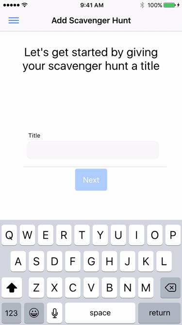

<div class="headerPadding">
</div>
<section class="home">
    <h1>{{title}}</h1>

    <div class="container">
        <md-card class="home-card">
            <md-card-header>
                <md-card-title>Messages</md-card-title>
                <!--<md-card-subtitle>Heres is some more stuff</md-card-subtitle>-->
            </md-card-header>
            <md-card-content>
                <div *ngFor="let message of messages"> 
                    {{message.text}}
                </div>
                <input [(ngModel)]="message">
                <button md-raised-button (click)="sendMessage()">Send</button>
                <!--<p>The Shiba Inu is the smallest of the six original and distinct spitz breeds of dog from Japan. A small, agile dog that copes very well with mountainous terrain, the Shiba Inu was originally bred for hunting.</p>-->
            </md-card-content>
        </md-card>
    </div>
    <!---->

    <a href="lutapp://profile">Open Profile</a>
    <a href="lutapp://tasks/1">Open Profile</a>
</section>